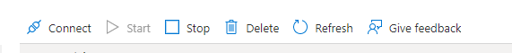

3.5. Current Status of the environments¶
This section is about the current state of deployment of Dx29, so it is useful only for Foundation 29 programmers. However, it may be of interest to third parties as this mechanism has been used to save application costs in the long run, so it can be applied to any other project that follows the architecture of this application.
The decision or preventive measure (to save costs) has been taken to stop the development and test environments until new functionalities are incorporated. In other words, once the product is considered closed, or at least a stage of it, the development and test environments can be stopped so that they do not consume Azure resources.
This means that new developments are stopped, because the flow that has been defined to incorporate new functionalities is as follows:
- Develop the new functionality in the development environment, in the develop branch of the project.
- Once the result is satisfactory, it will be uploaded to the test environment, making a release on the main branch and executing the corresponding pipeline, in order to carry out the relevant tests. If the result of the tests is satisfactory, continue with point 3, otherwise go back to 1 and perform steps 1 and 2 again until a correct result is achieved.
- With the code tested in the test environment, it is uploaded to production by executing the corresponding pipeline.
In addition to this, it must be taken into account that during the design of the pipelines to automate the build and deploy tasks, as already mentioned, the one corresponding to the production environment does not compile new images, but accesses the test Container Registry and only deploys those images to the production cluster. That is, if these images have not gone through the Test environment, they have not been generated and published in the Container Registry and therefore the new functionality could not be uploaded to the Production environment. This was defined as a security mechanism to control the versions and what is contained in the production environment, ensuring that it is exactly the same as what was tested in Test.
Therefore, if you want to add new developments, these are the steps to follow:
- Bring up the development environment again and work on it the new implementations.
- When you want to move on to the testing phase, make the corresponding release, raise the Test environment and execute the build and deploy pipeline of this. Again, this testing phase may or may not produce satisfactory results. In the first case, you go to point 3, while in the second case you return to point 1 with the development environment already up.
- Once the test environment is validated and approved, the production pipeline is executed to move the new functionalities to this environment and make them available to users.
- Once in production, if no further development is to be done, the development and test environments are shut down again.
3.5.1. Bringing up and shutting down an environment with AKS.¶
To perform the start and stop operations of an AKS, see the guide.
These actions can also be performed through the Azure portal. To do this, access the cluster that we want to start or stop, and from Overview we have the buttons to perform these actions.
